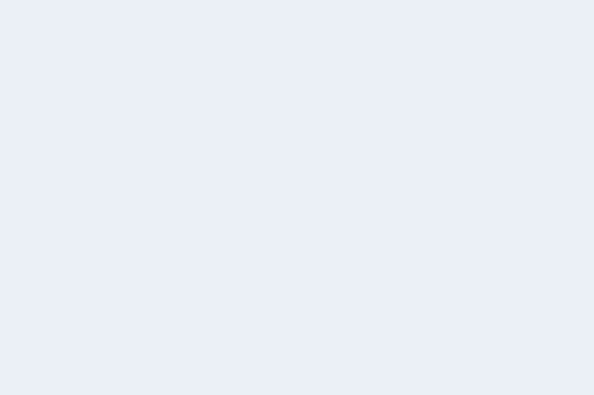
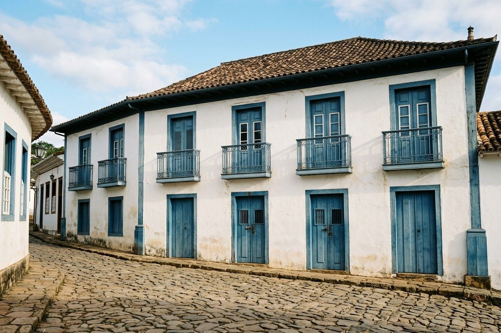
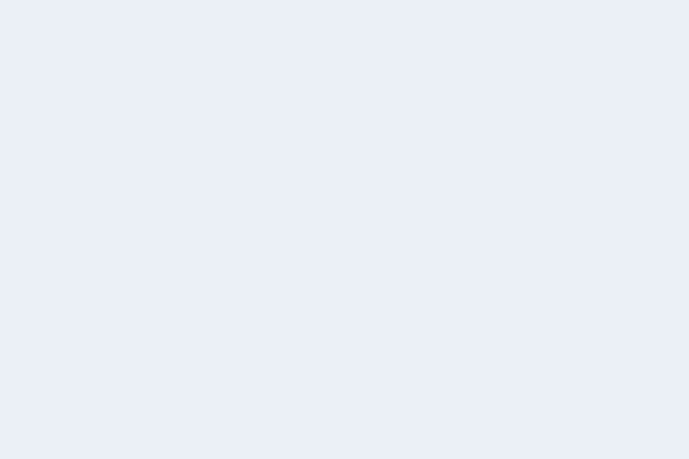
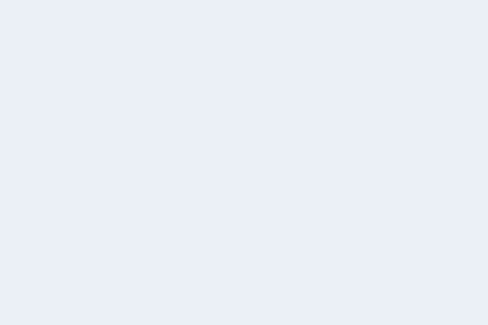

Quarto do Largo
2 pessoas
- Cama de casal
- Janela para a serra
- Ar-condicionado
- Banheiro privativo
a partir de R$ 390 a diária, com café
Consultar este quarto
Um casarão de 1870 com seis quartos, pátio com jabuticabeira e redes, a cinco minutos a pé do Largo das Forras. Silêncio à noite, sino da matriz de manhã.
Pão de queijo, queijo da Canastra, bolo do dia e café coado, servido no pátio
Sombra da jabuticabeira e um canto para ler depois do passeio
Matriz de Santo Antônio, ateliês e restaurantes sem precisar do carro

2 pessoas
a partir de R$ 390 a diária, com café
Consultar este quarto
2 pessoas
a partir de R$ 420 a diária, com café
Consultar este quarto
até 4 pessoas
a partir de R$ 560 a diária, com café
Consultar este quartoServido das 8h às 10h no pátio. Pão de queijo assado na hora, queijo da Canastra, broa de fubá, frutas do pomar e café coado no pano. Se for sair cedo para trilha, a gente prepara um lanche para levar.
| Belo Horizonte | 190 km, cerca de 3h pela BR-040 |
|---|---|
| Rio de Janeiro | 330 km, cerca de 5h |
| São João del-Rei | 14 km, 20 min de carro ou de Maria-fumaça aos fins de semana |

Recepção das 8h às 20h. Mande as datas e quantas pessoas vêm.
Falar com a pousada(32) 90000-0000 contato@exemplo.com.br